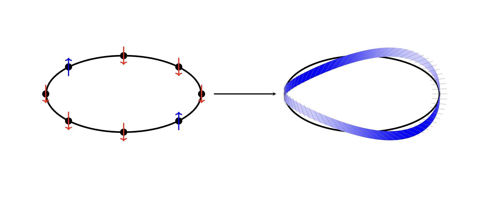
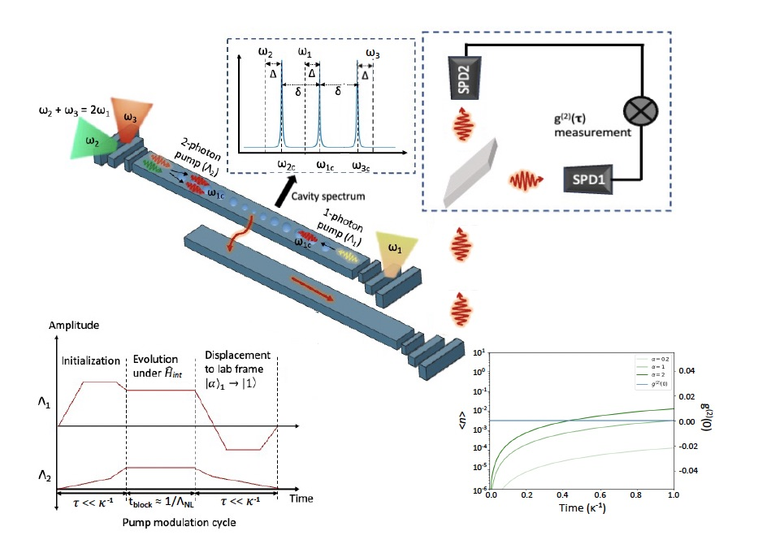
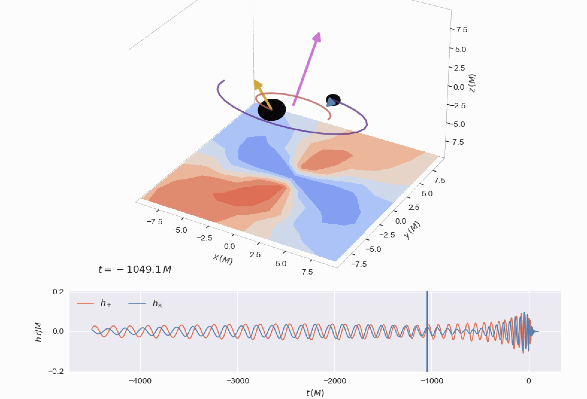

Research Projects
I study how locality, emergence, and continuity arise from finite algebraic descriptions of nonlinear systems, treating mathematical structure as a physical hypothesis rather than a neutral language.
2+
Active Projects
3
Research Areas
Dec. 2025
Latest Work

Continuum Limits of Discrete Quantum Systems
completedKey Focus
Explores how the algebra of observables evolves when taking the continuum limit of discrete spin chains, with focus on the Heisenberg XXX model and emergence of von Neumann factors.
Methods
Bethe Ansatz
Operator Algebra
von Neumann Factors
Quantum Integrability

Single-Photon Blockade with Weak Nonlinearities
completedKey Focus
Simulated single-photon blockade using weak Kerr-type nonlinearity in theoretical quantum optics setup, deepening understanding of open quantum systems and photon statistics.
Methods
Low‑energy theory
Green’s functions
Numerical tight‑binding
Quantum Information Measures via Conditional Probabilities
completedKey Focus
Investigated alternative ways to define quantum information measures using conditional probabilities to create more intuitive tools for characterizing quantum entanglement and non-classical behavior.
Methods
Quantum Information
Conditional Probabilities
Entanglement
Quantum Foundations

Updating BBHexplorer
ongoingKey Focus
Modernizing and extending the BBHexplorer codebase for analyzing binary black hole mergers, enhancing computational efficiency and adding new visualization tools for gravitational wave data analysis.
Methods
General Relativity
Gravitational Waves
Numerical Relativity
Data Visualization